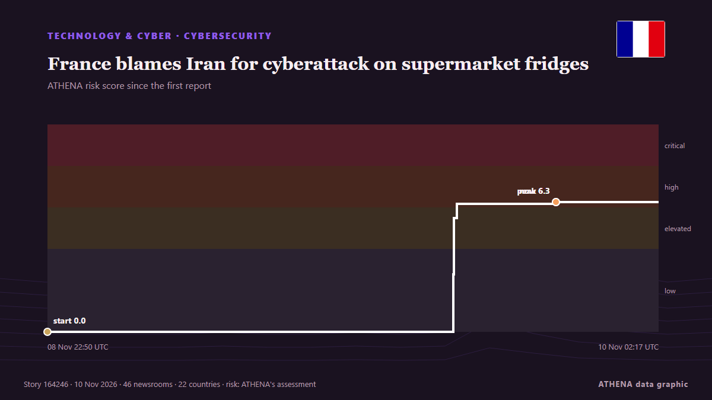

France blames Iran for cyberattack on supermarket fridges

Retailers have been forced to discard food and temporarily take affected equipment offline. de Business Daily Africa
Relayé de façon indépendante par 47 médias dans 23 pays depuis le 8 nov. ; premier à l'annoncer : Business Daily Africa ; la couverture faiblit. ATHENA juge le risque élevé (6.1/10), surtout en raison de la gravité des dommages décrits et de sa portée géographique et sectorielle. La confiance est de 88 % (élevée) : 47 médias indépendants le confirment, avec une fiabilité moyenne des sources de 77 %. Médias par pays : États-Unis (10), Royaume-Uni (4), Émirats arabes unis (3). Couverture : du 8 nov. au 9 nov., 26 heures.
Pourquoi c'est important: Les évolutions technologiques et cyber façonnent la sécurité, la concurrence et les règles de la vie numérique.
Ce qui a changé : 49 nouveaux articles de 44 rédactions dans les 24 heures jusqu'au 10 nov..
Premier titre : Supermarket fridges hacking saga exposes dark side of IoT
Les titres sont affichés en anglais, tels que publiés.
Comment lire cette page
- Ce que vous lisez
- 47 médias dans 23 pays ont rapporté cet événement. Les reportages ci-dessous sont classés selon leur ordre de parution ; chaque titre ouvre l'article original. ATHENA n'écrit aucun reportage.
- Notre lecture
- Sous surveillance — Les reportages décrivent une action, ou une décision encore à prendre, entre des États ou des groupes armés. ATHENA suit la suite des événements. Nous guettons quatre types d'évolution : rien de plus, une action ouverte et revendiquée, une action menée par des tiers ou sans revendication, et un accident ou un malentendu. Nous ne prédisons pas lequel se produira.
- Quelle base de preuves
- Solide De nombreux médias indépendants, dans de nombreux pays, décrivent le même événement.
Après retrait des doublons, des éléments hors sujet et périmés, 29 des 40 reportages listés sont retenus ; 98 % des titres correspondent à l'événement.
Environ 45 % des titres relèvent de l'analyse ou de l'opinion plutôt que du simple compte rendu.
- Ce que cela ne veut pas dire
- ATHENA mesure la façon dont un événement est rapporté, pas sa véracité. Ce n'est ni une prévision, ni un jugement sur qui a raison, ni un conseil.
- Ce qui la changerait
- Des reportages d'autres médias indépendants montrant une évolution différente, ou une confirmation ou un démenti ferme d'une source officielle.
Lecture R2 · actualisée à chaque mise à jour de cette page. ATHENA n'a pas encore publié de bilan de ces lectures ; il sera lié ici le moment venu.
En un coup d'œil
Sélectionné, noté et rédigé par la méthodologie publiée d'ATHENA. Aucun rédacteur n'intervient sur un événement en particulier. Comment il est produit ›
| 08 Nov 18:15 UTC | 1 |
|---|---|
| 08 Nov 20:15 UTC | 0 |
| 08 Nov 22:15 UTC | 0 |
| 09 Nov 00:15 UTC | 0 |
| 09 Nov 02:15 UTC | 0 |
| 09 Nov 04:15 UTC | 1 |
| 09 Nov 06:15 UTC | 0 |
| 09 Nov 08:15 UTC | 0 |
| 09 Nov 10:15 UTC | 1 |
| 09 Nov 12:15 UTC | 0 |
| 09 Nov 14:15 UTC | 1 |
| 09 Nov 16:15 UTC | 24 |
| 09 Nov 18:15 UTC | 13 |
| 09 Nov 20:15 UTC | 5 |
| 09 Nov 22:15 UTC | 3 |
| 10 Nov 00:15 UTC | 0 |
| 10 Nov 02:15 UTC | 1 |
| 08 Nov 22:50 UTC | 0.0 |
|---|---|
| 09 Nov 17:03 UTC | 2.8 |
| 09 Nov 17:04 UTC | 5.5 |
| 09 Nov 17:12 UTC | 6.2 |
| 09 Nov 21:39 UTC | 6.3 |
| 10 Nov 02:17 UTC | 6.1 |
Pourquoi ces chiffres
Importance
Risque
Confiance
La couverture : qui l'a annoncé, et quand
titre tel que publié · ouvre l'original- Business Daily Africa · KenyaSupermarket fridges hacking saga exposes dark side of IoT
- CNBC World · États-UnisFrom supermarket fridges to passenger flights, a wave of threats is testing Europe's defenses
- The National · Émirats arabes unisFrance accuses Iran of being behind Europe-wide hacks on fridges
- Arab News · Arabie saouditeFrance says Iran’s Guards behind cyberattacks on fridges
- Al Jazeera English · QatarFrance accuses Iran of cyberattack on supermarket fridges
- Politico Europe · BelgiqueFrance blames Iran for cyberattacks targeting supermarket fridges
- Khaleej Times (working feed) · Émirats arabes unisFrance accuses IRGC of cyberattack on supermarket fridges, summons Iran ambassador
- Anadolu Agency (English) · TurquieFrench intelligence links supermarket refrigeration cyberattack to Iran: Report
- Al-Monitor · États-UnisFrance blames Iran for supermarket fridge hack, seeks EU sanctions
- Asharq Al-Awsat (English) · Arabie saouditeFrance Says Iran’s Guards Behind Cyberattacks on Fridges, Vows Sanctions
- France 24 English · France🔴 Iran's Revolutionary Guards behind cyberattacks on supermarket fridges, says French FM
- BBC News · Royaume-UniFrance accuses Iran of supermarket fridge hacking
- ABC News Australia · AustralieFrance blames Iran for supermarket fridge cyberattacks
- Le Monde (English) · FranceFrance accuses Iran's Guards of cyberattacks on supermarket fridges
- CBC News (alternative feed) · CanadaFrance blames Iran for cyberattack that hacked supermarket refrigerators across the country
- Sky News (World) · Royaume-UniFrance blames Iran for massive cyber attack on supermarket fridges
- Middle East Eye · INTIranian ambassador summoned over alleged cyberattacks on French supermarket fridges
- Courthouse News · États-UnisFrance says Iran’s Guards behind cyberattacks on fridges
- ABC News (International) · États-UnisFrance blames Iran for the last month's cyberattack on supermarket fridges
- Al-Monitor · États-UnisFrance says Iran's Guards behind cyberattacks on fridges
- Al-Monitor · États-UnisFrance says Iran behind 'unprecedented' cyberattacks on fridges
- Global News (World) · CanadaFrance says Iran caused last month’s cyberattack on supermarket fridges
- Kurdistan24 (English) · IrakFrance Accuses Iran’s Revolutionary Guards of Unprecedented Cyberattacks on Supermarkets
- The Independent · Royaume-UniFrance blames Iran for supermarket fridge cyberattack
- MyJoyOnline · GhanaFrance accuses Iran of supermarket fridge hacking
- The Guardian · Royaume-UniIran was behind cyber-attack on French supermarket freezers, Paris says
- Gulf News · Émirats arabes unisFrance blames Iran for last month's cyberattack on supermarket fridges
- The Jerusalem Post · IsraëlFrance accuses Iran's Revolutionary Guards of cyberattack on supermarket fridges
- The New York Times (World) · États-UnisFrance Blames Iran for Cyberattack on Refrigeration Systems
- News of Bahrain · BahreïnFrance Blames Iran For Supermarket Cyberattacks
- BleepingComputer · États-UnisFrance blames Iranian hackers for supermarket attacks that sparked fires
- DW English · AllemagneFrench officials blame Iran for supermarket fridge hacking
- The New Arab · INTFrance accuses Iran of cyberattack on European fridges
- The Age · AustralieIran blamed for ‘sabotage’ attacks on hundreds of European fridges
- The Record (Recorded Future News) · États-UnisFrance blames Iran for fridge cyberattacks, says some caused fires
- NDTV · IndeFrance Says Iran's Guards Behind Cyberattacks On Supermarket Fridges
- NDTV · IndeFrance Says Iran's Guards Behind Cyberattacks On Supermarket Fridges
- Channels TV · NigeriaFrance Accuses Iran’s Guards Of Masterminding Cyberattacks On Fridges
- Forbes Business · États-UnisFrance Blames Iran For Cyberattack That Heated Supermarket Refrigerators—Causing Millions In Damage
- France 24 English · FranceParis prosecutor opens probe into IRGC cyber unit Shahid Kaveh over fridge cyberattacks